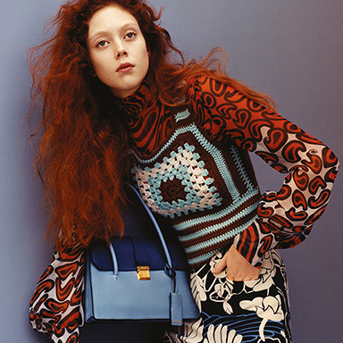
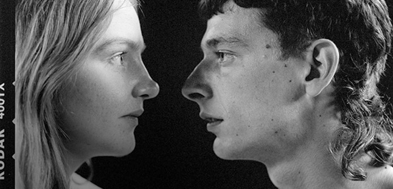

본문영역
COLLECTION
2020 Fall/Winter Collection
discover- For the Fall-Winter 2020 Miu Miu show, AMO confronts August Perret’s sober Palais d’Iena with a newfound sense of audacity, hijacking the surfaces of the architecture with new patterns, colors, and textures.
The first scene of intervention begins at the entrance, where the original white floor is covered by a bold decorative carpet, an antithesis in both form and material. As the carpet continues throughout the Palais, it invades the hypostyle and the “Pas Perdu”, wrapping along the entry and the Grand Stairs. - Other elements of the Palais, from the colonnade to the windows, are similarly confronted. Each of the existing columns is surrounded by metal frames equipped with LEDs, which sublimate each column into a geometry of bright pink light.
At the bottom of every column, a velvet plinth becomes both a visual counterpart of the composition and a seating element. In between the columns, reclaimed cinema seating forms a dynamic milieu, creating a whimsical atmosphere inside the solemn Palais. Mirrors along the wall extend this mania to the infinite on either side, and provide the backdrop for the models walking the perimeter of the space. - This phantasm challenges the order and precision of modernism, as Miu Miu reclaims the Palais d’Iena for irreverence and play.
Elements used for the set-up of the show will find new life after the event thanks to an association offering a service of collection, recovery of raw materials and decoration waste from fashion shows, making them available to professionals and students of the cultural sector.
CAMPAIGN
-
- CASA CORBERÓ
- Imagine an artists’ colony. The colony is all female. The claustrophobic dramas of this colony take place within a sprawling, labyrinthine property; part stage set, part installation, part gallery, part home. Here, the events are hinted at, intimated and obliquely observed in the Spring Summer 2020 Miu Miu campaign.
- Paws Up
- An interconnected group on a journey of discovery - of different places, of different selves. The Fall/Winter 2019 Miu Miu advertising campaign is powered by an exploration of youth and the great outdoors. It is about a dynamic sense of adventure and freedom, of wanderlust, a search for new experience.
- 
- CROISIÈRE
- Jamie Hawkesworth’s portraits of flame-haired Natalie Westling – capturing the psychedelic allure of the Miu Miu Croisière 2015 collection – are paired next to photographs of the built and natural world, shot with Hawkesworth’s instinctive eye for pattern and composition, and his signature saturated colour palette.
-
 Miu Miu City
Miu Miu City
WOMEN`S TALE

Women`s Tale #18
"BRIGITTE"
-
Women`s Tale #19
"NIGHTWALK" -
Women`s Tale #17
"Shako Mako"
LOOK BOOK
STORY
-
- Miu Miu
-
Miu Miu presents a photographic series by Alice Neale and Lotta Volkova.
A cinematic study of three female characters, the story of who these women are and what exactly they are doing is ambiguous - the narrative left up to the viewer’s interpretation.
As if they were unearthed film-stills from a never before seen art-house movie, these images reveal a new type of Miu Miu girl, one at once introverted and confrontational, both an exhibitionist and a voyeur.
A variety of pieces from the Miu Miu Spring/Summer 2019 runway and post-runway collections reflect this elliptical mood.
50’s-style lingerie is proudly on display under sheer masculine shirting. Aged, full-skirted, knife-pleated denim is sharply tailored. Glittering sequins and sparkle are spliced with peek-a-boo transparencies. A timeless sense of beauty is reinvented – taken apart at the seams.
Add to the mix sturdy-heeled jewelled Mary Janes worn with opaque knee-high socks, crystal-encrusted jewellery and the already iconic new Miu Solitaire bag; the end result is an idiosyncratic, empowering look at glamour, elegance and, of course, femininity.
-